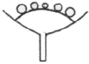
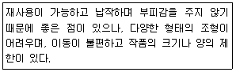
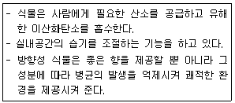
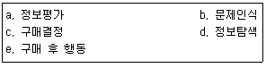

화훼장식기사 (2012-08-26 기출문제)
1과목: 화훼재료 및 형태학
1. 다음 중 장식원예에서 식재재료로 이용되며 용토 표면에 깔아 수분 증발억제 또는 미적효과를 나타내는 재료로 알맞지 않는 것은?
- 수태
- 바크
- 하이드로볼
- 하이포넥스
(정답률: 83%)

2. 폴라보노이드계 색소 중 안토시아닌류는 자연계에서 일반적으로 6가지의 안토시아니딘이 존재하고 있다. 다음 중 안토시아니딘과 그 화색과의 연결이 옳지 않은 것은?
- 펠라르고니딘-선홍색 제라늄
- 델피니단-청색계 델피니움
- 시아니딛-자주색 당아욱
- 페오니딘-분홍색 작약
(정답률: 59%)
3. 식물 생태학상 햔기의 역할로 거리가 먼 것은?
- 곤충을 유인하여 수분(pollination)을 조장한다.
- 꽃과 잎 등에 기생하는 미생물의 번식을 방지한다.
- 증산작용이 잘 일어날 수 있도록 보조하는 역할을 한다.
- 해충과 조수의 침해를 방지하는 역할을 한다.
(정답률: 92%)
4. 다음 중 화색에 대한 설명으로 옳은 것은?
- 화색은 꽃잎의 두께, 구조, 꽃잎의 색소에 영향을 받는다.
- 화색이란 꽃잎에 함유되어 있는 색소에 의해 가시광선이 흡수된 광 스펙트럼이다.
- 사람들이 화색을 인식할 때 볼 수 있는 색의 범위는 가시광선을 뺀 나머지 광선이다.
- 색소는 꽃잎을 구성하는 세포 전체에 골고루 분포되어 있다.
(정답률: 71%)
5. 다음 중 관엽식물류가 아닌 것은?
- Limnium sinuatum Mill.
- Rhapis excelsa Wendl.
- Ficus slastica Roxb.
- Monstera deliciosa Liebm
(정답률: 84%)
6. 화훼류의 기후형에 따른 분류에서 튤립은 어느 그룹(群)에 속하는가?
- 지중해 기후형
- 대륙동안 기후형
- 대륙서안 기후형
- 열대 기후형
(정답률: 67%)
7. 그림의 형태와 같이 화서축이 단축되어 두상으로 된 화서축에 소화경이 없는 소화가 밀집되어 있기 때문에 단상화로 보이는 형태의 화서는?

- 수상화서
- 단두화서
- 두상화서
- 원추화서
(정답률: 88%)
8. 토분에 비하여 플라스틱 화분의 장점은?
- 통기성이 양호하다.
- 식물생장에 비교적 유리하다.
- 관리가 간편하다.
- 화분 내 온도변화가 적다.
(정답률: 89%)
9. 다음 구근류 중에서 구경으로만 번식하는 것으로 짝지어진 것은?
- 백합, 아마릴리스
- 꽃창포, 프리지아
- 다알리아, 히아신스
- 클라디올러스, 프리지아
(정답률: 79%)
10. 다음 중 잎이 변형된 형태가 아닌 것은?
- 나리류의 인편
- 선인장의 가시
- 크로커스의 구경
- 스파티필럼의 포
(정답률: 50%)
11. 꽃의 형태별 분류에서 꽃꽂이 시에 큰 꽃들 사이를 메워주는 역할을 하고 작품을 끝마무리 할 때 복잡하지 않으면서 풍성한 감을 줄 수 있는 꽃의 형태는?
- 라인 플라워(line flower)
- 폼 플라워(form flower)
- 매스 플라워(mass flower)
- 필러 플라워(filler flower)
(정답률: 93%)
12. 투명한 유리나 플라스틱 용기 내에 관상식물과 관상용 물고기를 함께 기르는 것은?
- terrarium
- potpourri
- topiary
- aquarium
(정답률: 85%)
13. 다음 중 주로 봄에 씨를 뿌려 재배하는 화훼로 서로 맞게 짝지어진 것은?
- 코스모스-팬지-시네라리아
- 채송화-샐비어-메리골드
- 칼랑코에-시클라멘-프리뮬라
- 칸나-다알리아-데이지
(정답률: 54%)
14. 로터리나 공원의 중앙에 설치하여 사방으로부터 관상할 수 있게 만든 화단은?
- 기식화단
- 리본화단
- 모양화단
- 암석화단
(정답률: 86%)
15. 다음의 식물 중 학명이 잘못된 것은?
- 개나리-Forsythia japonica
- 동백-Camellia japonica
- 무궁화-Hibiscus syriacus
- 진달래-Rhododendron mucronulatum
(정답률: 47%)
16. 꽃의 형태별 용도가 잘못 연결된 것은?
- 라인 플라워-금어초, 리아트리스
- 폼 플라워-스토크, 델피니움
- 매스 플라워-카네이션, 데이지
- 필러 플라워-숙근안개초, 스타티스
(정답률: 93%)
17. 공중걸이(hanging basket) 장식에 가장 알맞은 식물로 나열된 것은?
- 파리지옥, 끈끈이주걱, 사라세니아
- 테이블야자, 크립탄서스, 피토니아
- 아이비, 러브체인, 신답서스
- 프라뮬라, 고사리류, 구즈마니아
(정답률: 91%)
18. 꽃잎이 서로 붙어있고 떨어져있음에 따라서 이판화(schizopetalous flower)와 합판화(gamopetalous flower)로 구분하는데, 다음 중 합판화에 속하는 것은?
- 팬지
- 프리지아
- 코스모스
- 거베라
(정답률: 47%)
19. 구근류의 종류 중 뿌리가 비대하여 양분의 저장기관을 이룬 것은?
- 인경(鏻莖)
- 구경(球莖)
- 괴경(塊莖)
- 괴근(塊根)
(정답률: 77%)
20. 피자식물의 열매의 분류와 그 예의 연결이 옳지 않은 것은?
- 골돌과-작약
- 삭과-철쭉
- 장과-포도
- 취과-뽕나무
(정답률: 65%)
2과목: 화훼품질유지 및 관리론
21. 음지성 식물을 햇빛이 강한 양지쪽에서 기르면 형태학적으로 변화가 나타나는데, 그 변화에 대한 설명으로 틀린 것은?
- 엽장이나 엽폭 등이 좁아져서 잎의 크기가 작아진다.
- 엽육이 두꺼워지며, 잎의 가장자리에 있는 톱니나 결각의 깊이가 낮아져서 윤곽이 또렷하지가 않게 된다.
- 줄기의 마디가 길어져서 식물의 키가 전체적으로 커진다.
- 엽록체의 수가 감소되거나 파괴되기 때문에 엽색은 황록색 또는 황갈색으로 변하기 쉽다.
(정답률: 43%)
22. 추국을 여름에 개화시키기 위해서는 어떤 처리가 가장 필요한가?
- 심야조명
- 차광처리
- 고온처리
- 저온처리
(정답률: 83%)
23. 절화의 수분 흡수 및 이동을 저해하는 유관속 폐쇄의 원인으로 거리가 먼 것은?
- 절단 후 도관 중에 기포가 생겨 수분의 상승을 방해하는 것
- 박테리아, 곰팡이 등 미생물이 도관을 막는 것
- 체관에 펙틴, 폴리페놀, 단백질 등의 점착물질이 쌓여 폐쇄되는 것
- 절단면에 유액이 분비되어 절구가 굳어 버리는 것
(정답률: 74%)
24. STS용액은 AgNO3와 Na2S2O3ㆍ5H2O를 몰농도 1:4의 비율로 각각 만들어 동량 혼합하여 사용한다. 1mM STS 용액을 만드는 방법의 설명으로 옳은 것은? (단, AgNO3 분자량=170, Na2S2O3ㆍ5H2O 분자량=248)
- AgNO3 170mg을 증류수 1L에 녹이고, 또 Na2S2O3ㆍ5H2O 992mg을 1L의 증류수에 각각 녹인 후, Na2S2O3ㆍ5H2O 용액 1L에 AgNO3 용액 1L를 서서히 부어 초자봉으로 저으면서 혼합한다.
- AgNO3 170mg을 수돗물 1L에 녹이고, 또 Na2S2O3ㆍ5H2O 992mg을 1L의 수독물에 각각 녹인 후, Na2S2O3ㆍ5H2O 용액 1L에 AgNO3 용액 1L를 서서히 부어 초자봉으로 저으면서 혼합한다.
- AgNO3 340mg을 증류수 1L에 녹이고, 또 Na2S2O3ㆍ5H2O 1984mg을 1L의 중류수에 각각 녹인 후, Na2S2O3ㆍ5H2O 용액 1L에 AgNO3 용액 1L를 서서히 부어 초자봉으로 저으면서 혼합한다.
- AgNO3 340mg을 수돗물 1L에 녹이고, 또 Na2S2O3ㆍ5H2O 1984mg을 1L의 수독물에 각각 녹인 후, Na2S2O3ㆍ5H2O 용액 1L에 AgNO3 용액 1L를 서서히 부어 초자봉으로 저으면서 혼합한다.
(정답률: 82%)
25. 다음 중 STS(Silver thiosulfate) 처리 효과가 큰 화종은?
- 국화
- 거베라
- 카네이션
- 안스리움
(정답률: 74%)
26. 포장, 저장 및 수송 시 발생되는 에틸렌의 제거방법에 해당하지 않는 것은?
- 과망간산카륨의 이용
- 실리카겔에 의한 흡착
- 활성탄에 의한 흡착
- 감압제거법
(정답률: 75%)
27. 절화의 품질을 외적품질과 내적품질로 구분할 때 다음 중 내적품질에 해당되는 것은?
- 절화의 수명
- 병해충 및 물리적 상처
- 꽃, 줄기, 잎 등의 균형
- 화색의 선명도와 청결도
(정답률: 82%)
28. 분화류의 재배환경에 대한 일반적인 설명으로 틀린 것은?
- 고광도 하에서 재배되는 식물에는 저광도 하에서 재배되는 식물에 비해 많은 양의 무기영양을 시비해야 한다.
- 드라세나, 벤자민고무나무 등은 재배기간 동안 무기성분을 높은 수준으로 공급하면 실내 환경으로 옮긴 후에도 장기간 고품질이 유지된다.
- 분화류는 출하하기 전 증산작용을 원활히 할 수 있도록 재배온도를 1~2℃ 높이는 것이 분화의 품질에 유리하다.
- 주기적으로 관수하는 것은 고품질의 분화를 생산할 수 있으나, 지나치게 많은 관수를 오히려 해로울 수 있다.
(정답률: 57%)
29. 설탕 5%와 8-HQC 200ppm이 함유된 절화보존제를 만들려고 할 때 절화보존제 1L당 첨가해야 할 양은?
- 설탕 500g, 8-HQC 200mg
- 설탕 500g, 8-HQC 20mg
- 설탕 50g, 8-HQC 200mg
- 설탕 50g, 8-HQC 20mg
(정답률: 78%)
30. 다음의 절화 보존제의 구성 성분 중 살균제의 역할을 하지 않는 것은?
- Silver nitrate
- Thiobendazole
- Aluminium sulfate
- Aminooxyacetic acid
(정답률: 84%)
31. 난방용 연료나 자동차, 공장 등에서 발생하는 아황산가스는 식물체에 악영향을 미치는데, 다음 중 아황산가스에 비교적 강한 화훼는?
- 베고니아
- 라일락
- 코스모스
- 제라늄
(정답률: 65%)
32. 광도 요구성에 따라 양생식물과 반음색식물, 음생식물로 구분할 때 다음 중 음생식물에 속하는 것은?
- 채송화
- 은방울꽃
- 페튜니아
- 칸나
(정답률: 64%)
33. 주간과 야간의 온도 차이를 의미하는 것으로 식물의 생장과 발육에 영향을 미치는 것은?
- SDP
- DIF
- LDP
- ADT
(정답률: 79%)
34. 저온(0~4℃)으로 저장하면 냉해를 입으므로 13℃ 정도에 저장하여야 하는 절화는?
- 금어초
- 나리
- 카네이션
- 안스리움
(정답률: 79%)
35. 다음 중 절화의 저온수송의 장점이 아닌 것은?
- 급격한 수분 손실 방지
- 줄기, 잎, 그리고 꽃잎 내의 저장 영양분과 다른 물질들의 분해 촉진
- 꽃에 의한 에틸렌 생성의 감소
- 고온으로 촉진되는 호흡 방열을 감소시켜 꽃의 고온화를 방지
(정답률: 87%)
36. 다음 배양토의 종류 중 산성을 띄는 것으로 사용 전에 pH 조정이 필요한 것은?
- 피트모스
- 펄라이트
- 버미큘라이트
- 암면
(정답률: 65%)
37. 다음 중 종자 휴면의 유도와 유지에 결정적인 역할을 하는 물질은?
- 벤질아데닌(BA)
- 사이토카이닌(Cytokinin)
- 아브시스산(ABA)
- 지베렐린(GA)
(정답률: 75%)
38. 절화의 수확적기에 대한 설명으로 가장 적합하지 않는 것은?
- 카네이션-스프레이 카네이션은 2~3송이 개화 시
- 숙근안개초-30~50% 개화 시
- 금어초-약 5~10 송이의 소화가 개화했을 시
- 국화-대국은 80~90% 개화 시
(정답률: 65%)
39. 토양의 pH가 2.0~4.0일 때 나타나는 현상이 아닌 것은?
- 칼슘과 마그네슘의 흡수가 감소한다.
- 알루미늄과 망간의 흡수가 증가한다.
- 수국의 꽃 색깔이 청색으로 변한다.
- 미생물의 활성이 높아진다.
(정답률: 75%)
40. 온대산 식물의 일반적인 생육적온으로 가장 적합한 것은?
- 25~30℃
- 15~25℃
- 10~18℃
- 5~10℃
(정답률: 69%)
3과목: 화훼장식학
41. 식물이 자연의 식생에서 보여주는 모습과 관계없이 디자이너의 의도로 소재를 자유롭게 구성하여 부피감과 역동적인 형태를 풍성하게 보여 장식성을 높이는 효과를 표현하는 구성은?
- 장식적 구성
- 식생적 구성
- 선형적 구성
- 구조적 구성
(정답률: 74%)
42. 건조소재의 선택에 대한 설명으로 틀린 것은?
- 꽃, 잎, 줄기, 과실, 종자, 뿌리 등의 각 기관을 건조시킬 수 있으나, 그 기관 자체 내의 수분 함유량이 소량인 식물만 건조가 가능하다.
- 물이 필요 없는 장식이므로 액자, 벽장식, 디스플레이 등 장소와 위치에 구애 받지 않고 폭넓게 사용이 가능하다.
- 건조소재로 채취할 수 있는 소재로는 종자를 파종애서 재배한 식물과 야생식물이 있는데 재배소재는 관리, 수확시기를 조절할 수 있으나 야생소재는 조절이 불가능하다.
- 이삭을 이용하는 소재로는 라그러스(lagurus), 밀, 강아지풀 등이 있다.
(정답률: 64%)
43. 화훼장식의 의미의 대한 설명으로 틀린 것은?
- 화훼장식은 미적이고 정서적인 창조활동으로서 예술적 표현추구와 기능성ㆍ합리성 등의 조건을 충족시킬 수 있는 창조 활동을 포함한다.
- 꽃은 오랜 세월동안 인간의 가장 친근한 장식대상 일뿐 아니라 예술과 기자인의 오래된 소재로서 봉헌과 헌정 및 감상과 전달의 표현물로 역할을 해 왔다.
- 재료의 유형에는 생명이 있는 신선한 재료, 건조시킨 재료, 압착시킨 재료, 인공적으로 제조한 인조재료 등이 있다.
- 서양 꽃꽂이는 전통적으로 유리접시처럼 납작한 용기에 모래나 이끼뭉치를 채워 꽃을 꽂았다.
(정답률: 72%)
44. 동양의 화훼장식에 대한 설명으로 틀린 것은?
- 천지인 사상을 삼일태극(三一太極)의 원리로 해석하면 원(圓)은 일점(ㆍ), 방(方)은 이점(ㆍㆍ), 각(角)은 삼점(ㆍㆍㆍ)의 원리이다.
- 현대 화훼장식의 삼주지(三主枝)중 진(眞)은 선의 흐름을 먼저 결정 짖는 으뜸 되는 주지로서 양(陽)에 해당된다.
- 원(圓)은 천(天)의 원리로서 무한하며, 각(角)은 지(地)의 원리로 유한하며, 방(方)은 인(人)의 원리가 된다.
- 현대 화훼장식의 삼주지(三主枝) 중 인(仁)은 작품을 마무리하면서 변화를 창조할 수 있는 내용을 담고 있으며 양성(兩性)에 해당한다.
(정답률: 56%)
45. 백화점의 디스플레이에 계절별 특성이 나타난 화훼장식을 하려한다. 해당 월별로 적합한 소재가 아닌 것은?
- 1월-소나무, 대나무, 극락조화
- 3월-장미, 튤립, 아이비
- 9월-글라디올러스, 개나리, 프리지어
- 12월-전나무, 포인세티아, 안스리움
(정답률: 75%)
46. 화훼장식을 위한 수경재배에 사용되는 재료와 거리가 먼 것은?
- 하이드로볼
- 히아신스
- 실리카겔
- 유리용기
(정답률: 89%)
47. 식물을 건조하는 방법 중에서 글리세린 흡수 후 건조하는 방법에 대한 설명으로 틀린 것은?
- 건조소재는 건조 후, 잘 부서지는 단점이 있는데 어떤 꽃들은 글리세린으로 처리할 수 있으며 처리 후 유연성이 증가되어 장식과 보관이 편리하다.
- 글리세린 처리를 위한 꽃들은 수확하자마자 처리해야 하며 처리방법은 절화의 줄기나 나뭇가지의 도관을 통하여 흡수시키는 방법과 용액에 담가서 흡수시키는 방법이 있다.
- 40℃의 물, 글리세린, 습윤제를 혼합하면 물의 표면장력을 줄여 흡수가 용이해진다.
- 글리세린으로 흡수 건조를 하게 되면 빠른 시간 내에 건조가 되므로 일반적으로 널리 사용되고 있는 방법이며, 보통 건조시간은 2~3일 정도 된다.
(정답률: 77%)
48. 빅토리아 시대 최초의 화훼장식 대회가 개최된 곳은?
- 런던
- 파리
- 프랑크푸르트
- 밀라노
(정답률: 65%)
49. 건조화의 제작에 대한 설명으로 틀린 것은?
- 글리세린 건조법은 글리세린을 40℃의 물과 1:2(부피비) 또는 1:3으로 혼합하며, 트윈 20과 트윈 80과 같은 습윤제 0.5~1%를 혼합하며 물의 표면장력을 줄여 흡수가 용이해진다.
- 장미의 색과 향기를 고려하지 않을 때에는 40℃가 적절한 열풍건조 온도이며 향기를 고려할 때는 40~50℃가 품종에 관계없이 적절한 온도이다.
- 밀, 수수, 밀짚꽃, 니겔라 등 몇 가지 품목을 제외한 건조소재는 거의 수입에 의존하고 있어, 국내에서도 가공기술에 대한 연구가 절실히 필요한 실정이다.
- 흡수염색법은 1929년의 종교 축제일에 푸른 카네이션을 만들어 코사지나 테이블장식에 이용한 이래 발전해 온 방법으로 물 속에 염료로 녹여 절단부의 도관을 통해 흡수시키는 방법이다.
(정답률: 58%)
50. 절화정식의 기본적인 형태로서 넓이보다 높이가 강조되며 수직축은 화기의 중심에 있고 실내공간이 좁고 천장이 높은 현대적인 실내공간에 가장 잘 어울리는 형태는?
- 대각선형
- 비대칭 삼각형
- 타원형
- 수직형
(정답률: 85%)
51. 핸드타이드 부케에 대한 설명으로 틀린 것은?
- 줄기는 반듯기 나선형으로 조립해야 한다.
- 이동이 가능한 꽃꽂이 작품이라고도 한다.
- 신부가 드는 결혼식용 꽃다발로 이용되기도 한다.
- 줄기의 끝은 사선으로 자르는 것이 좋다.
(정답률: 65%)
52. 작품제적을 위한 고정 도구 중 다음의 설명에 해당되는 것은?

- 철망
- 침봉
- 플로랄 폼
- 무생물 재료
(정답률: 83%)
53. 다음 설명하는 화훼장식의 기능은?

- 환경적 기능
- 교육적 기능
- 심리적 기능
- 치료적 기능
(정답률: 90%)
54. 우리나라 절화장식의 시대별 특징에 대한 연결로 틀린 것은?
- 삼국시대:불전공화로 삼존형식, 선적 표현양식 출현
- 통일신라:화훼와 관련된 전문 관리 출현
- 고려:귀족문화의 발전으로 표현양식의 다양화
- 조선:화려함보다 간결하며 깨끗한 품격을 즐겨 일지화 발전
(정답률: 50%)
55. 고구려 고분인 쌍영총에 나타난 꽃문화에 대한 설명으로 거리가 먼 것은?
- 꽃꽂이 작품에 연꽃의 사용이 보여진다.
- 현실 북쪽 벽의 부부도에 꽃작품이 그려져 있다.
- 연꽃이 비대칭적인 형태로 표현되었다.
- 곡선으로 표현된 병 꽃꽂이 작품이다.
(정답률: 58%)
56. 디스플레이에 대한 설명으로 틀린 것은?
- 디스플레이는 나타내다, 보이다, 전시하다를 의미한다.
- 디스플레이를 위한 화훼장식은 판매촉진을 목적으로 하기도 한다.
- 디스플레이를 위해 전시물, 전시 공간, 관람자 특성을 고려해야 한다.
- 디스플레이의 실행은 개념도 작성, 현장조사, 설계, 제작의 순이다.
(정답률: 79%)
57. 생활공간용 화훼장식에 대한 설명으로 틀린 것은?
- 장식용 화훼류는 유행에 민감하며, 한 때 전자파를 흡수하는 끈끈이주걱과 같은 식충식물이 인기가 있었다.
- 주거공간의 화훼장식으로는 절화를 준비하여 직접 꽃을 꽂는 꽃꽂이가 성행했으나 현재는 꽃다발과 같은 완성품을 구입하여 이용하는 형태로 변화되고 있따.
- 주거용 건물에 이용되는 화훼장식물은 크고 작은 분식물과 변화를 주기 위한 꽃꽂이, 그리고 건조소재나 조화를 이용한 벽결이용 리스나 갈란드 등이 일반적이다.
- 사무공간 곳곳에는 관렵식물인 Arecaecae, Ficus 종류의 대형 분식물을 배치하고 계절별 꽃피는 식물을 지속적으로 교체하여 유지해주며, 정기적인 화훼장식이 이루어지는 경우가 많다.
(정답률: 60%)
58. 장례식용 화훼장식에 관한 설명으로 옳은 것은?
- 관 위에 놓는 꽃으로 만든 모포를 스카프라 칭한다.
- 우리나라는 영정장식, 근조바구니, 근조화한이 주종을 이룬다.
- 관 뚜껑의 1/2를 장식하는 것을 더블 앤드 스프레이라 한다.
- 리스는 불멸, 영원을 의미하고 기독교와 관련된 종교적인 의미를 상징한다.
(정답률: 69%)
59. 절화장식에 관한 설명으로 옳은 것은?
- 카톨레아는 주로 라인플라워로 사용된다.
- 글리세린은 스켈톤잎의 엽육제거에 이용된다.
- 신랑의 가슴에 다는 꽃을 코로넷이라 한다.
- 터지머지와 클러스터 부케는 원형부케이다.
(정답률: 73%)
60. 7세기 후반에 일본 꽃꽂이의 여러 가지 기법을 개발하여 첫 유파인 이케노보(地方)를 창시한 사람의 이름은?
- 요시마사(足利義政)
- 소아미(相(阿)
- 오노노 이모코(小野妹子)
- 오하시(大橋)
(정답률: 62%)
4과목: 화훼장식 디자인 및 제작론
61. 꽃다발에 대한 설명으로 거리가 먼 것은?
- 꽃을 가지고 다발을 만든 것으로 축하나 애도용으로 보편적으로 사용되는 화훼장식품이다.
- 줄기가 한 점으로 모아지는 부분을 끈으로 묶어서 만든다.
- 꽃의 줄기를 철사로 대체하여 자유롭게 구부릴 수 있다.
- 소재를 반평면적으로 배치하여 표현하는 장식물이다.
(정답률: 67%)
62. 명시도에 대한 설명으로 가장 거리가 먼 것은?
- 주위의 색광의 차이에 따라 명시도는 달라진다.
- 3속성의 차가 커질수록 명시도는 낮아진다.
- 바탕색이 흰색일 경우 순색의 명시도는 낮아진다.
- 가시성(visibility)이라고도 한다.
(정답률: 75%)
63. 화훼장식물 제작시 재료의 사용에 있어 한군데를 특별히 눈에 띄게 해서 작품성을 높이는 디자인의 구성원리는?
- 비례
- 강조
- 대비
- 조화
(정답률: 92%)
64. 색의 삼속성이 아닌 것은?
- 색상-hue
- 채도-chroma
- 색조-tone
- 명도-value
(정답률: 73%)
65. "디자인(design)한다.“의 근본적인 뜻으로 가장 바른 것은?
- 계획하고 구성하는 것이다.
- 주제를 파악하는 것이다.
- 우연에 의한 행위 결과이다.
- 시각적 전달을 위한 수단이 전부이다.
(정답률: 93%)
66. 다음 중 한국의 장례식에 사용하기에 가장 적합한 꽃은?
- 붉은 장미
- 라일락
- 흰국화
- 카네이션
(정답률: 83%)
67. 장식원예 식물심기의 배치에 대한 설명이 아닌 것은?
- 환경조건이 비슷한 식물로 구성한다.
- 자연경관을 연상하여 입체적, 평면적으로 구성한다.
- 주된 식물과 다른 식물들은 용기 내에 같은 양으로 배치한다.
- 작은 돌, 인형, 소형 집이나 소형 탑을 넣어 제작할 수 있다.
(정답률: 89%)
68. 절화의 수명과 관계된 용인으로 가장 거리가 먼 것은?
- 에틸렌 가스
- 온도
- 습도
- 조도
(정답률: 77%)
69. 분식물의 이동에 관한 사항 중 틀린 것은?
- 겨울철에 저온을 피할 것
- 직사광선을 받지 않도록 할 것
- 운송 도중에는 반드시 밀폐시킬 것
- 운송도중에는 적당한 습도를 유지할 것
(정답률: 86%)
70. 고속도로, 아파트 옹벽 등에 자연석이나 옹벽을 계단식으로 보이도록 초화, 관목 등을 심는 화단은?
- 경재화단
- 노단화단
- 암석화단
- 기식화단
(정답률: 77%)
71. 보색조화가 나타내는 느낌은?
- 부드러움
- 통일감
- 강렬함
- 단정함
(정답률: 83%)
72. 신부 부케 제작 시 주의해야 할 점이 아닌 것은?
- 홀더 사용 시 물이 떨어지지 않도록 주의한다.
- 가벼워야 한다.
- 신부드레스가 상하지 않도록 주의한다.
- 홀더 사용 시 수분 공급을 할 수 있어 많은 양의 꽃을 사용할 수 있다.
(정답률: 92%)
73. 실내조경을 계획할 때 조사해야 할 것과 거리가 먼 것은?
- 조경 목적의 파악과 주제를 결정한다.
- 식물배치에 영향을 받는 건물내부의 구조와 밀도 배치를 고려한다.
- 사용하는 장식물의 성장을 고려하지 않아도 된다.
- 예산을 고려한다.
(정답률: 84%)
74. 절화장식의 디자인 과정에 대한 설명으로 적합하지 않은 것은?
- 가장 먼저 장식물이나 장식공간 디자이너와의 토의를 통하여 장식물이나 장식공간의 용도나 목적을 파악하고 주제를 결정한다.
- 주제가 결정되면 장식 공간의 특성과 이용자의 특성, 시각구조상의 특성 등에 대한 조사와 분석이 이루어져야 한다.
- 수집된 자료의 분석결과, 목적에 맞는 구체적인 장식 계획, 즉 전체 디자인 공간의 규모ㆍ유형ㆍ배색, 소재의 종류, 또는 배치되는 장식물의 크기ㆍ수량ㆍ형태ㆍ색상ㆍ질감 등을 구상하게 된다.
- 소형 장식물일 경우에는 가벼운 스케치로도 가능하나 규모가 큰 공간의 연출일 경우 평면도, 입면도, 투시도 등의 도면을 작성한다.
(정답률: 54%)
75. 완성된 절화장식물의 관리에 대한 설명으로 틀린 것은?
- 절화장식물은 같은 용기 속에 다양한 꽃을 같이 담게 되므로 각 식물체에서 분비되는 분비물이 서로 영향을 미쳐 수명을 단축시킬 수도 있어 절화별 특성을 알아둘 필요가 있다.
- 절화장식물은 사람들의 생활공간에 배치되는 경우가 일반적이므로 수명을 연장시킬 수 있는 적절한 환경조건을 고려한다.
- 절화장식물도 광합성을 하므로 직사광선이 비치는 곳에 두는 것이 좋으며 너무 건조하면 분무해 준다.
- 절화장식물은 에틸렌 발생원, 담배연기, 익은 과일과 채소로부터 멀리 두고 시든 꽃은 제거한다.
(정답률: 75%)
76. 디자인 요소 질감에 대한 설명이 올바른 것은?
- 질감이란 사물이 갖고 있는 표면의 질과 관련된 것으로 촉감과 함께 시각으로도 그 표면의 질을 느낄 수 있다.
- 질감은 재질이 거칠면 거칠수록 빛을 반사하고, 표면이 매끄러울수록 빛을 많이 흡수한다.
- 필로덴드론 셀로움은 팔손이보다 질감이 부드럽고, 벤자민 고무나무보다 질감이 거칠다.
- 좁은 공간을 넓게 보이도록 하려면 전면에 작고 고운 질감의 식물을 식재하고 후면으로 갈수록 크고 거친 질감의 식물을 식재한다.
(정답률: 86%)
77. 플로럴폼에 대한 설명으로 바르지 않은 것은?
- 플로럴폼은 충분히 적셔야 한다.
- 물을 흡수시키기 위해 손으로 눌러준다.
- 플로럴폼은 공기가 빠져 나갈 때까지 띄워둔다.
- 특별히 제작된 다공성 물질이다.
(정답률: 92%)
78. 절화장식에서 구조적 구성에 대한 설명이 적절하지 않은 것은?
- 구조적 구성은 식생적 구성이 발전되어 나타난 새로운 현대적 구성이다.
- 형태, 크기, 색, 재질감뿐만 아니라 소재의 배열이 나타내는 표면의 조직이나 구성, 재질감 즉 구조의 효과를 전면에 부각시키는 구성이다.
- 다양한 표면을 가진 개개의 꽃이나 잎이 집합되어 형성된 구조가 두드러져 보인다.
- 소재를 보다 강조하기 위하여 천, 철사, 털실, 깃털, 유리구슬 등 질감이 명확한 인공소재를 식물소재와 조합시키기도 한다.
(정답률: 58%)
79. 과다비율과 과소비율에 대한 설명으로 틀린 것은?
- 과다비율과 과소비율은 정상적 비율이외의 비율이다.
- 꽃이 용기 안으로 묻혀 있으면 과소 비율이다.
- 표현된 부분의 용기 높이의 3배 이상이면 과다 비율이다.
- 과소비율과 과다비율은 소재들과 재료들의 형태와 선의 운동성의 배려가 중요하다.
(정답률: 40%)
80. 배아그라스, 아스파라거스, 금속실, 엔젤헤어 등과 같은 가벼운 재료를 사용하므로 무거운 재료가 투명하고 가벼운 느낌이 들도록 하는 기법의 명칭은?
- 푸르닝 기법(pruning techniques)
- 테일러링 기법(tailoring techniques)
- 베일링 기법(veiling techniques)
- 레이싱 기법(lacing techniques)
(정답률: 54%)
5과목: 화훼유통 및 경영론
81. 우리나라의 화훼 수출을 증대시키기 위한 방안과 관련이 없는 것은?
- 선도유지 기술의 개발
- 식물 검역제도의 완화
- 유통 구조 개선의 확립
- 품질 및 노동생산성의 향성
(정답률: 86%)
82. 화훼류 표준규격에서 품위등급을 산정하는데 기준요소가 아닌 것은?
- 꽃대 길이
- 전체의 중량
- 품종 고유의 특성
- 개화 정도
(정답률: 75%)
83. 효율적인 화훼 유통체계의 확립 방법이 아닌 것은?
- Cold Chain System 및 습식유통 등으로 화훼 품질 개선
- 유통체계가 복잡한 화훼 공판장의 활용보다 신속한 개별 산지 도매상인에 의한 거래 활성화
- 화훼 유통정보 시스템 및 규격 표준화 강화
- 공동선별, 포장, 판매 등 산지 유통 개선 조성 및 상품화 촉진
(정답률: 67%)
84. 우리나라 화훼 수요의 특징이 아닌 것은?
- 캐주얼 플라워의 수요가 대부분을 차지한다.
- 타인을 위해 구입하는 선물용, 증정용의 비중이 높다.
- 사회적인 유행을 많이 탄다.
- 특정 기념일날 수요가 몰리는 경향이 있다.
(정답률: 85%)
85. 코노버(Conover)에 의해 제안된 절화품질을 결정하는 점수 계산법에서 형태의 세부항목이 아닌 것은?
- 외관이 바른 것
- 적당한 개화 상태
- 잎이 많을 것
- 꽃 크기와 줄기길이 및 줄기직경간의 적절한 조화
(정답률: 78%)
86. 영세사업주가 자기 또는 유족을 보험 수급자로 하여 산업재해보상보험에 가입하기 위해서는 어디의 승인을 받아야 하는가?
- 근로복지공단
- 관할지방노동관서
- 상공회의소
- 보험사무조합
(정답률: 88%)
87. 판촉광고 중 상품을 판매하는 장소에서 고객의 구매시점에 행하여지는 광고를 무엇이라고 하는가?
- DM광고
- POP광고
- 포지션광고
- 옥외광고
(정답률: 77%)
88. 구매단계의 순서로 옳은 것은?

- b→a→c→d→e
- b→d→a→c→e
- a→b→c→d→e
- a→c→b→d→e
(정답률: 77%)
89. 사용자가 18세 미만인 자를 고용하고자 하는 경우에는 어떻게 하여야 하는가?
- 사업장 소속 관할구청장의 허가를 받아야 한다.
- 사업장에 피고용인의 취직인허증을 비치하여야 한다.
- 취직인허증을 지닌 자를 고용할 수 있으며, 가족관계기록사항에 대한 증명서와 후견자의 동의서를 사업장에 비치하여야 한다.
- 근로기준법에 18세 이하는 법적으로 고용이 불가함으로 고용할 수 없다.
(정답률: 50%)
90. 다른 절화에 비해 많은 잎을 가지기 때문에 절화의 수송중에 수분손실이 가장 높은 것은?
- 튤립
- 국화
- 아이리스
- 나팔수선
(정답률: 71%)
91. 화훼류를 포함한 농산물 유통정보의 사용방법으로 바르지 못한 것은?
- 사용 적절한 시기에 입수한다.
- 정확한 정보를 입수한다.
- 검토 분석 후 사용한다.
- 신속한 정보만을 사용한다.
(정답률: 84%)
92. 농산물 유통조직 기구 중 소매기구가 아닌 것은?
- 대형할인매장
- 슈퍼마켓
- 농산물공판장
- 대형백화점
(정답률: 65%)
93. 다음 중 국내에서 생산액이 가장 많은 분화류는?
- 난류
- 포트멈
- 선인장
- 시클라멘
(정답률: 90%)
94. 고정비에 해당하는 것은?
- 지급운임
- 포장재료비
- 지급하역비
- 토자ㆍ건물 임차료
(정답률: 80%)
95. 판매운영을 위한 고객관리 시스템에 관한 설명으로 틀린 것은?
- 잠재고객의 파악과 지속적인 접촉방법을 모색한다.
- 접촉결과의 관찰 및 평가에 의한 고객 유형별 주요를 파악한다.
- 우수고객은 On-line, Off-line 할 것 없이 모두 중요한 자산이다.
- CRM이나 e-CRM의 관계 유지는 기업입장에서 보면 이익창출에는 효과가 없다.
(정답률: 80%)
96. 저장고 내의 산소 농도를 낮추고 탄산가스 농도를 높여 저장하는 방법은?
- 저온저장
- CA저장
- 감압저장
- 자기촉매저장
(정답률: 80%)
97. 화원의 주요업무에 속하지 않는 것은?
- 진열 업무를 통해 판매 상품의 부가가치를 높인다.
- 배달, 사후관리, 서비스 등이 포함된다.
- 상품 디자인에 한정된다.
- 가격결정, 판매 촉진을 위한 전력 주립 등이 포함된다.
(정답률: 67%)
98. 농산물표준규격에 따른 절화의 종류별 크기 구분에서 호칭의 기준 또는 1묶음의 본수에 대한 설명으로 옳은 것은?
- 스탠다드 백합의 1급 펴균 절화장은 50cm이다.
- 스탠다드 장미의 1묶음의 본수는 12본이다.
- 스프레이 카네이션의 1등급 절화장은 50cm이다.
- 스탠다드 국화의 1묶음의 본수는 20본이다.
(정답률: 79%)
99. 화훼상품의 사이버 판매(전자상거래)의 특징으로 틀린 것은?
- 홈페이지 구축 등 많은 비용이 소요된다.
- 영업시간과 판매지역의 무제한이다.
- 쌍방향 통신을 통한 1대1 마케팅이 가능하다.
- 유통경로가 짧다.
(정답률: 62%)
100. 화훼도매시장의 기능으로 틀린 것은?
- 수급 조절 기능
- 유통 정보 제공 기능
- 농산물의 집하, 분산, 저장 및 보관, 운송기능
- 화훼재배농가 기술 훈련기능
(정답률: 86%)
설명: 하이포넥스는 식물재배용으로 개발된 고성능 토양개량재로, 수분 증발억제와 뿌리생장 촉진 등의 기능을 가지고 있어 장식원예에서도 이용됩니다. 따라서 이 보기에서 알맞지 않은 것은 없습니다.